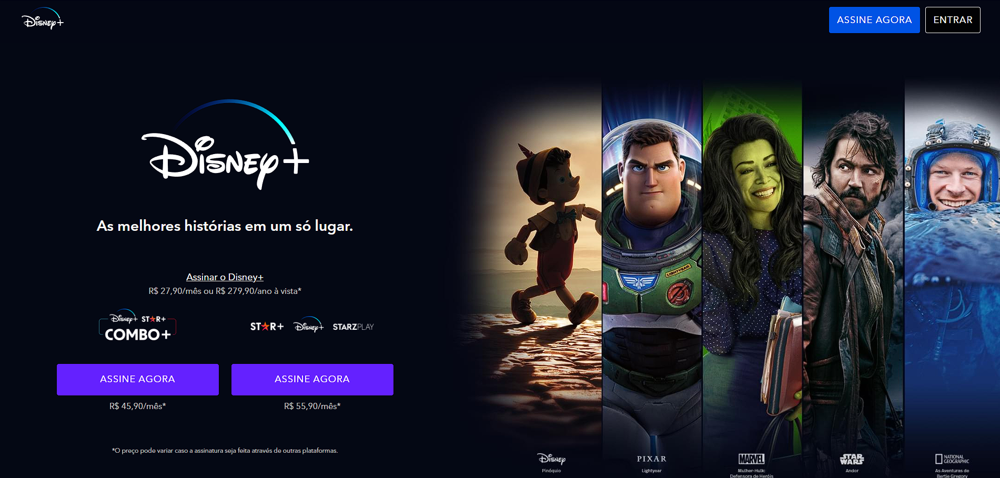
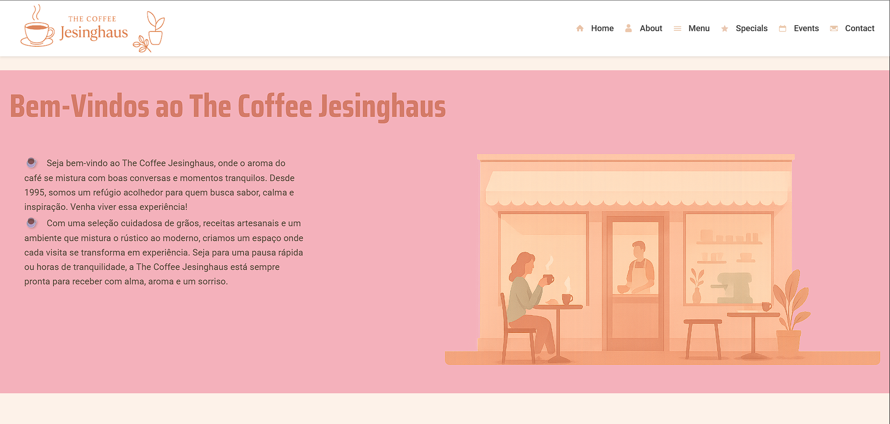
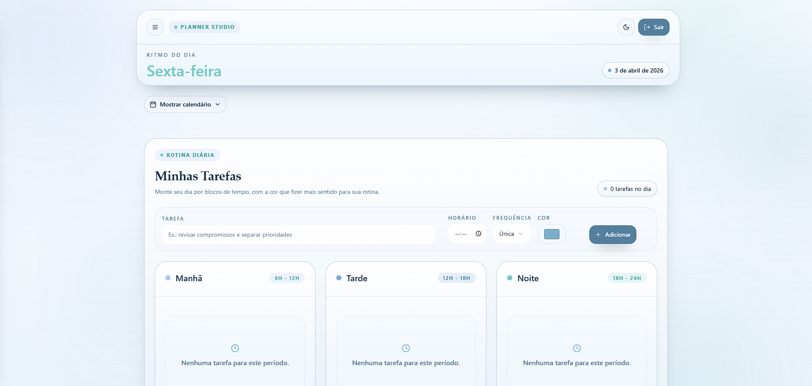
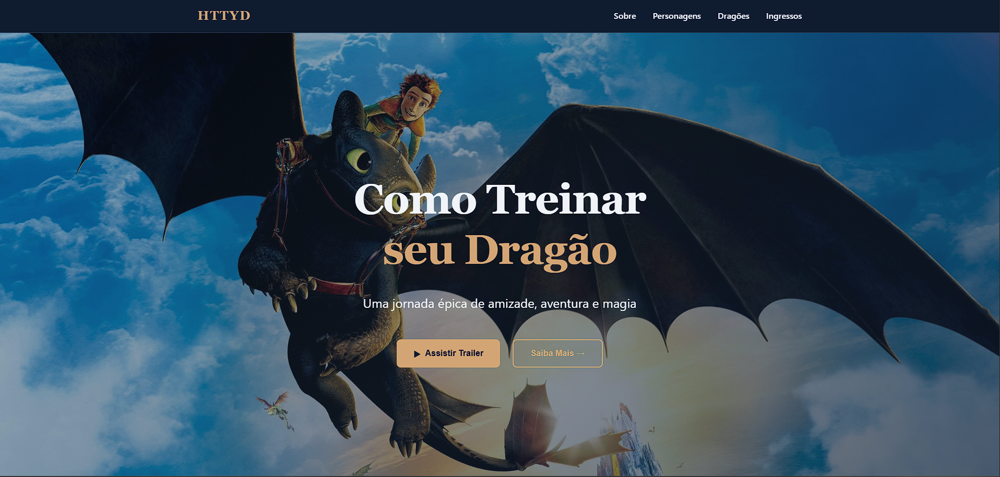
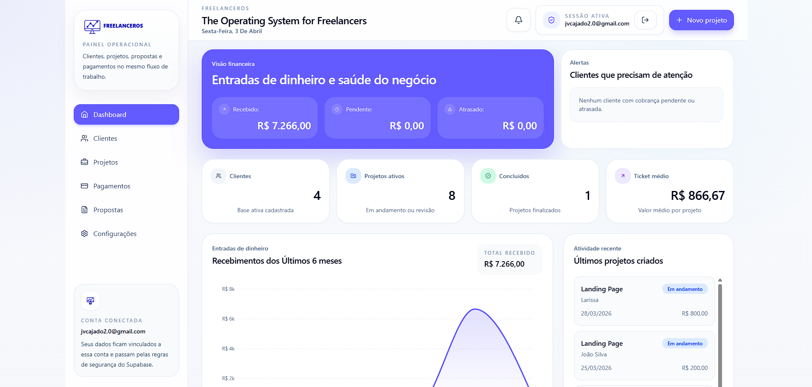

Olá, eu sou João Victor
Estudante de Desenvolvimento Web Front-End apaixonado por criar experiências digitais incríveis.
Sobre Mim
Desenvolvedor Front-end em transição de carreira, com foco na construção de interfaces web utilizando HTML5, CSS3, JavaScript (ES6+) e React em nível inicial, além de TailwindCSS para estilização.
Atuo desenvolvendo projetos práticos com ênfase em organização de código, responsividade e clareza visual, sempre buscando aplicar boas práticas dentro do meu nível atual de conhecimento.
Trago comigo 4 anos de experiência na indústria metalúrgica, trabalhando com processos industriais complexos, o que me proporcionou disciplina, atenção a detalhes, responsabilidade com prazos e foco em execução — competências que aplico diretamente no desenvolvimento de software.
Atualmente estou cursando Ciência da Computação na Uninter, e busco minha primeira oportunidade como desenvolvedor front-end júnior, com o objetivo de evoluir tecnicamente em ambiente profissional, contribuir com o time e crescer de forma consistente.
Tenho interesse em expandir meus conhecimentos futuramente para o back-end (Python e banco de dados), mantendo no momento o foco principal em front-end e fundamentos sólidos.
Certificados & Habilidades
Informática Básica e Avançada - 2016
Conhecimentos em ferramentas de escritório, sistemas operacionais e internet.
Introdução a Programação - 2025
Fundamentos de lógica de programação, algoritmos e estruturas de dados.
Git & GitHub do Básico ao Avançado - 2026
Controle de versão e colaboração em projetos.
HTML5 & CSS3 Essenciais - 2026
Fundamentos de estruturação e estilização de páginas web, incluindo layouts responsivos e boas práticas de design.
Desenvolvedor Full Stack Python - Em andamento
Estudo de conceitos fundamentais e avançados de Python, incluindo desenvolvimento web, APIs e integração com bancos de dados.
JavaScript & TypeScript Essencial - Em andamento
Estudo de conceitos fundamentais e avançados de JavaScript e TypeScript, incluindo tipagem estática, funções, objetos e manipulação do DOM.
Projetos





Projeto de aplicativo web para gerenciamento de freelancers, desenvolvido com React (Vite), TailwindCSS e JavaScript. O Freelancer OS é projetado para ajudar freelancers a organizar seus projetos, prazos e finanças de forma eficiente, oferecendo uma interface intuitiva e recursos úteis para otimizar a gestão do trabalho freelance.